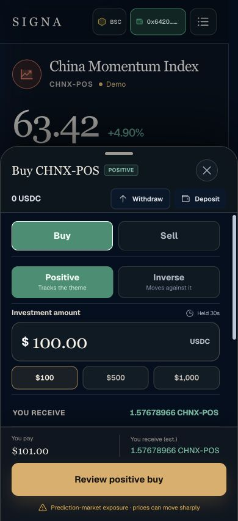

Signa Index · Diagram System
FRONTEND-DERIVED / DARK EDITORIAL / DATA-FIRST
Core paletteProduct tokens
Canvas
#04101FSurface
#0B1C30State
#43E6A6Action
#E1AD65Risk
#FF7585TypographyThree voices
China Momentum Index
状态定义、方法说明与操作标签
w₁ 30.00% · p₁ 68.00 · Iₜ 103.42
Diagram grammarStructure over spectacle
Input事件价格
pᵢ(t)Mapping状态暴露
dᵢ · wᵢOutput指数点位
IₜCurrent product truthMobile trading surface

Do
- 流程、时间线、权重和计算
- 短标签与真实公式
- 薄荷绿状态、琥珀金转换
- 一图一个结论
Avoid
- 地球、粒子、K 线和金币
- 机器人、大脑和抽象 AI
- 无来源数字和装饰指标
- 每段文字都强行配图